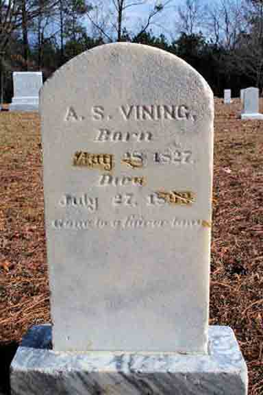
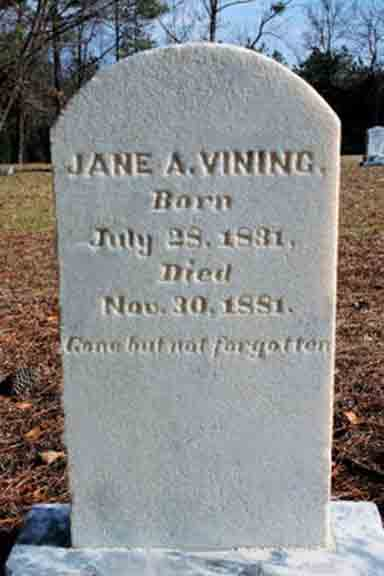
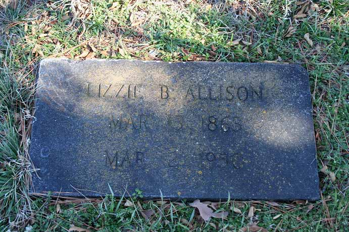
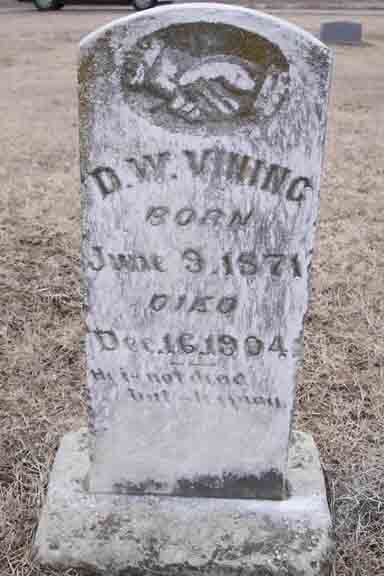

Census Data
| 1860 | 1870 | 1880 | 1890 | 1900 | |
| Austin Shorter Vining | 32 | 43 | 52 | ? | dead |
| Jane A. (Patterson) Vining | 28 | 39 | 48 | dead | |
| James Clinton Vining | 7 | 18 | married and living in separate household | ||
| Felix J. Vining | 2 | 12 | married and living in separate household | ||
| Elizabeth B. Vining | 6 | 17 | ? | ? | |
| Benjamin E. Vining | 5 | 14 | ? | married and living in separate household | |
| Albert Helon Vining | 2 | 11 | ? | married and living in separate household | |
| David W. Vining | 8 | ? | ? | ||
| Mary E. R. J. Vining | 8 | ? | ? |


Death Data
Gravestones for Austin Shorter Vining and Jane A. (Patterson) Vining, in Center Valley Cemetery, Chatsworth, Murray County, Georgia (from Find A Grave):


